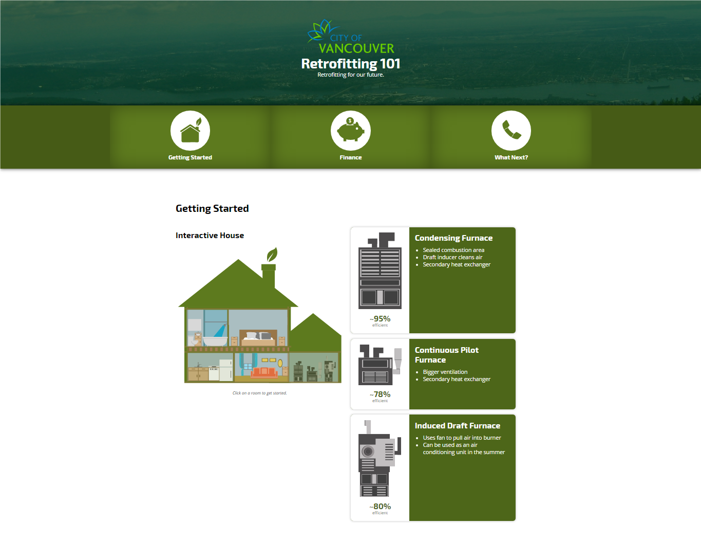

Retrofitting-101
Interface Design, Graphics Design, Market Research
The goal for this project was to help City Studio of Vancouver come up with a responsive website that educates Vancouver citizens on understanding the value of retrofitting their household for a more sustainable and renewable purposes.
After thorough investigation through piles of data, our team decided to design the site with a few personas in mind, specifically for those that want to learn more about retrofitting and how it’ll benefit them in the long run.

Before starting the design process, it was crucial for us to understand what and how does retrofit benefits ordinary household owners. Working with data and statistics provided by the City hall of Vancouver, we were able to narrow down potential users of the website. From the information we gathered, we began creating personas, and based upon those personas we were able to begin designing the wireframes.
- -Wireframe sketches + high fidelity prototypes and create an interactive prototype using Axure
- -Understanding the audience and building a system around the users
- -In charge of the end-to-end graphics design process
As one of the UX / UI Designer in the team as well as the main graphics designer,
We created personas in order to better understand the audience’s needs. Main user of the website will be of those looking to retrofit or understand how retrofitting may benefit them in the long run. Before getting down to the design process, we used statistics we gathered from the city-hall of Vancouver to generate three sets of personas.
Our biggest challenge was to identify potential users of the site and create something that’s educational for those without prior knowledge of retrofitting but at the same time, it can be easy and direct for those that understand the process but just wish to go forward with retrofitting their household. We created multiple versions of low fidelity wireframes iterations before moving forward with the version that ultimately benefits the majority of our personas. The last phase of our design process took the longest which require us to design high fidelity mockups that are to be presented to the representative from CityStudio as well as City hall of Vancouver.